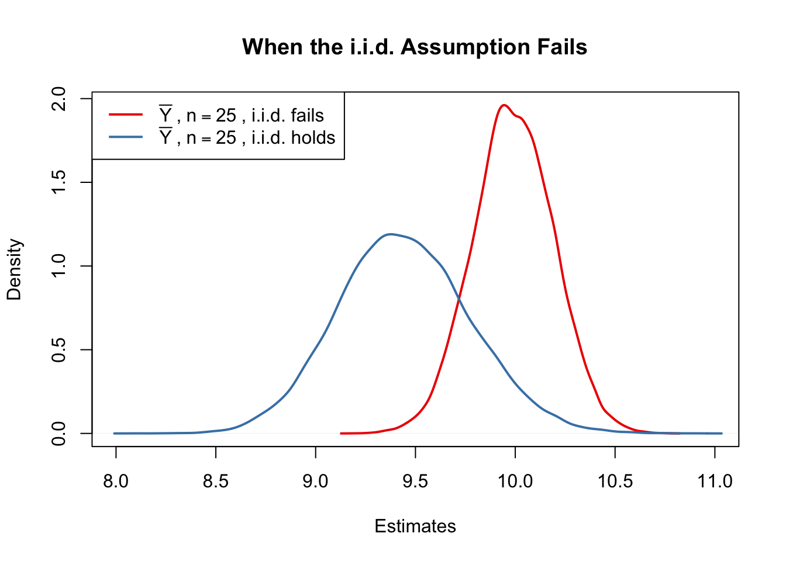

4 Linear Regression with One Regressor
This chapter introduces the basics in linear regression and shows how to perform regression analysis in R. In linear regression, the aim is to model the relationship between a dependent variable \(Y\) and one or more explanatory variables denoted as \(X_1, X_2, \dots, X_k\). Following the book we will focus on the concept of simple linear regression throughout the whole chapter. In simple linear regression, there is just one explanatory variable \(X_1\).
If for example a school cuts the class sizes by hiring new teachers, that is the school lowers the student-teacher ratios of their classes, \(X_1\), how would this affect the performance of the students involved in a standardized test,\(Y\)? With linear regression we can not only examine whether the student-teacher ratio does have an impact on the test results but we can also learn about the direction and the strength of this effect.
To start with an easy example, consider the following combinations of average test score and the average student-teacher ratio in some fictional schools.
| 1 | 2 | 3 | 4 | 5 | 6 | 7 | |
|---|---|---|---|---|---|---|---|
| TestScore | 680 | 640 | 670 | 660 | 630 | 660.0 | 635 |
| STR | 15 | 17 | 19 | 20 | 22 | 23.5 | 25 |
To work with these data in R we begin by creating two vectors: one for the student-teacher ratios (STR) and one for test scores (TestScore), both containing the data from the table above.
# Create sample data
STR <- c(15, 17, 19, 20, 22, 23.5, 25)
TestScore <- c(680, 640, 670, 660, 630, 660, 635)
# Print out sample data
STR## [1] 15.0 17.0 19.0 20.0 22.0 23.5 25.0TestScore## [1] 680 640 670 660 630 660 635If we use a simple linear regression model, we assume that the true relationship between both variables can be represented by a straight line, formally
\[ Y = b \cdot X + a. \]
For now, let us suppose that the true function which relates test score and student-teacher ratio to each other is
\[TestScore = 713 - 3 \times STR.\]
If possible, it is always a good idea to visualize the data You work with in an appropriate way. For our purpose it is suitable to use the function plot() to produce a scatterplot with STR on the \(X\)-axis and TestScore on the \(Y\) axis. An easy way to do so is to call plot(y_variable ~ x_variable) whereby y_variable and x_variable are placeholders for the vectors of observations we want to plot. Furthermore, we might want to add the true relationship to the plot. To draw a straight line, R provides the function abline(). We just have to call this function with arguments a (representing the intercept) and b (representing the slope) after executing plot() in order to add the line to our scatterplot.
The following code reproduces figure 4.1 from the textbook.
# create a scatter plot of the data
plot(TestScore ~ STR)
# add the true relationship to the plot
abline(a = 713, b = -3)
We find that our line does not touch any of the points although we claimed that it represents the true relationship. The reason for this is the core problem of statistics, randomness. Most of the time there are influences which cannot be explained in a purely deterministic fashion and thus exacerbate finding the true relationship.
In order to account for these differences between observed data and the true relationship, we extend our model from above by an error term \(u\) which covers these random effects. Put differently, \(u\) accounts for all the differences between the true regression line and the actual observed data. Beside pure randomness, these deviations could also arise from measerment errors or, as will be discussed later, could be the consequence of leaving out other factors that are relevant in explaining the dependent variable.
Which other factor are plausible in our example? For one thing, the test scores might be driven by the teachers quality and the background of the students. It is also imaginable that in some classes, the students were lucky on the test days and thus achieved higher scores. For now, we will summarize such influences by an additive component:
\[ TestScore = \beta_0 + \beta_1 \times STR + \text{other factors} \]
Of course this idea is very general as it can be easily extented to other situations that can be described with a linear model. The basic linear regression function we will work with hence is
\[ Y_i = \beta_0 + \beta_1 X_i + u_i. \]
Key Concept 4.1 summarizes the terminology of the simple linear regression model.
Key Concept 4.1
Terminology for the Linear Regression Model with a Single Regressor
The linear regression model is
\[Y_i = \beta_0 + \beta_1 X_1 + u_i \]
where
- the subscript \(i\) runs over the observations, \(i = 1\), …, \(n\)
- \(Y_i\) is the dependent variable, the regressand, or simply the left-hand variable
- \(X_i\) is the independent variable, the regressor, or simply the right-hand variable
- \(Y = \beta_0 + \beta_1 X\) is the population regression line also called the population regression function
- \(\beta_0\) is the intercept of the population regression line
- \(\beta_1\) is the slope of the population regression line
- \(u_i\) is the error term
Estimating the Coefficients of the Linear Regression Model
In practice, the intercept \(\beta_0\) and slope \(\beta_1\)of the population regression line are unknown. Therefore, we must employ data to estimate both unknown parameters. In the following a real world example will be used to demonstrate how this is achieved. We want to relate test scores to student-teacher ratios measured in californian schools. The test score is the district-wide average of reading and math scores for fifth graders. Again, the class size is measured as the number of students divided by the number of teachers (the student-teacher ratio). As for the data, the California School dataset (CASchools) comes with a R package called AER, an acronym for Applied Econometrics with R. After installing the package with install.packages("AER") and attaching it with library("AER") the dataset can be loaded using the data function.
# install the AER package (once)
install.packages("AER")
# load the AER package
library(AER)
# load the the data set in the workspace
data(CASchools) Note that once a package has been installed it is available for use at further occasions when invoked with library() — there is no need to run install.packages("...") again!
For several reasons it is interesting to know what kind of object we are dealing with. class(object_name) returns the type (class) of an object. Depending on the class of an object some functions (such as plot() and summary()) behave differently.
Let us check the class of the object CASchools.
class(CASchools)## [1] "data.frame"It turns out that CASchools is of class data.frame which is a convienient format to work with.
With help of the function head() we get a first overview of our data. This function shows only the first 6 rows of the data set which prevents an overcrowded console output.
head(CASchools)## district school county grades students
## 1 75119 Sunol Glen Unified Alameda KK-08 195
## 2 61499 Manzanita Elementary Butte KK-08 240
## 3 61549 Thermalito Union Elementary Butte KK-08 1550
## 4 61457 Golden Feather Union Elementary Butte KK-08 243
## 5 61523 Palermo Union Elementary Butte KK-08 1335
## 6 62042 Burrel Union Elementary Fresno KK-08 137
## teachers calworks lunch computer expenditure income english read
## 1 10.90 0.5102 2.0408 67 6384.911 22.690001 0.000000 691.6
## 2 11.15 15.4167 47.9167 101 5099.381 9.824000 4.583333 660.5
## 3 82.90 55.0323 76.3226 169 5501.955 8.978000 30.000002 636.3
## 4 14.00 36.4754 77.0492 85 7101.831 8.978000 0.000000 651.9
## 5 71.50 33.1086 78.4270 171 5235.988 9.080333 13.857677 641.8
## 6 6.40 12.3188 86.9565 25 5580.147 10.415000 12.408759 605.7
## math
## 1 690.0
## 2 661.9
## 3 650.9
## 4 643.5
## 5 639.9
## 6 605.4We find that the dataset consists of plenty of variables and most of them are numeric.
By the way: an alternative to class() and head() is str() which is deduced from ‘structure’ and gives a comprehensive overview of the object. Try this!
Turning back to CASchools, the two variables we are intersted in (i.e. average test score and the student-teacher ratio) are not included. However, it is possible to calculate both from the provided data. To obtain the student-teacher ratios, we simply divide the number of students by the number of teachers. The avarage test score is the arithmetic mean of the test score for reading and the score of the math test. The next code chunk shows how the two variables can be constructed and how they are appended to CASchools which is a data.frame.
# compute STR and append it to CASchools
CASchools$STR <- CASchools$students/CASchools$teachers
# compute TestScore and append it to CASchools
CASchools$score <- (CASchools$read + CASchools$math)/2 If we ran head(CASchools) again we would find the two variables of interest as additional columns named STR and score (check this!).
Table 4.1 from the text book summarizes the distribution of test scores and student-teacher ratios. There are several functions which can be used to produce similar results within R:
mean()(computes the arithmetic mean of the provided numbers)sd()(computes the sample standard deviation)quantile()(returns a vector of the specified quantiles for the data)
The next code chunk shows how to achieve this. First, we compute summary statistics on the coloumns STR and score of CASchools. In order to have a nice display format we gather the computed measures in a data.frame object named DistributionSummary.
# compute sample averages of STR and score
avg_STR <- mean(CASchools$STR)
avg_score <- mean(CASchools$score)
# compute sample standard deviations of STR and score
sd_STR <- sd(CASchools$STR)
sd_score <- sd(CASchools$score)
# set up a vector of percentiles and compute the quantiles
quantiles <- c(0.10, 0.25, 0.4, 0.5, 0.6, 0.75, 0.9)
quant_STR <- quantile(CASchools$STR, quantiles)
quant_score <- quantile(CASchools$score, quantiles)
# gather everything in a data.frame
DistributionSummary <- data.frame(
Average = c(avg_STR, avg_score),
StandardDeviation = c(sd_STR, sd_score),
quantile = rbind(quant_STR, quant_score)
)
# print the summary to the console
DistributionSummary## Average StandardDeviation quantile.10. quantile.25.
## quant_STR 19.64043 1.891812 17.3486 18.58236
## quant_score 654.15655 19.053347 630.3950 640.05000
## quantile.40. quantile.50. quantile.60. quantile.75.
## quant_STR 19.26618 19.72321 20.0783 20.87181
## quant_score 649.06999 654.45000 659.4000 666.66249
## quantile.90.
## quant_STR 21.86741
## quant_score 678.85999The standard distribution (the Base R package) of R already contains a summary function which can be applied to objects of class data.frame. Type and execute summary(STR)!
As done for the sample data, we use plot() for a visual survey. This allows us to detect specific characteristics of our data, such as outliers which are hard to discover by looking at mere numbers. This time we add some additional arguments to the plot() function.
The first argument in our call of plot(), score ~ STR, is again a formula that states the dependent variable and the regressor. However, this time the two variables are not saved in seperate vectors but are columns of CASchools. Therefore, R would not find the variables without the argument data beeing correctly specified. data must be in accordance with the name of the data.frame to which the variables belong, in this case CASchools. Further arguments are used to change the appearance of the plot: while main adds a title, xlab and ylab are adding custom labels to both axes.
plot(score ~ STR,
data = CASchools,
main = "Scatterplot of TestScore and STR",
xlab = "STR (X)",
ylab = "Test Score (Y)"
)
The plot (figure 4.2 in the book) shows the scatterplot of all observations on student-teacher ratio and Test score. We see that the points are strongly scatterd and an apparent relationship cannot be detected by only looking at them. Yet it can be assumed that both variables are negatively correlated, that is we expect to observe lower test scores in bigger classes.
The function cor() (type and execute ?cor for further info), can be used to compute the correlation between 2 numerical vectors.
cor(CASchools$STR, CASchools$score)## [1] -0.2263627As the scatterplot already suggests, the correlation is negative but rather weak.
The task we are facing now is to find a line which fits best to the data. Of course we could simply stick with graphical inspection and correlation analysis and then select the best fitting line by eyeballing. However, this is pretty unscientific and prone to subjective perception: different students would draw different regression lines. On this account, we are interested in techniques that are more sophisticated. Such a technique is ordinary least squares (OLS) estimation.
The Ordinary Least Squares Estimator
The OLS estimator chooses the regression coefficients such that the estimated regression line is as close as possible to the observed data points. Thereby closeness is measured by the sum of the squared mistakes made in predicting \(Y\) given \(X\). Let \(b_0\) and \(b_1\) be some estimators of \(\beta_0\) and \(\beta_1\). Then the sum of squared estimation mistakes can be expressed as
\[ \sum^n_{i = 1} (Y_i - b_0 - b_1 X_i)^2. \]
The OLS estimator in the simple regression model is the pair of estimators for intercept and slope which minimizes the expression above. The derivation of the OLS estimators for both parameters are presented in Appendix 4.1 of the book. The results are summarized in Key Concept 4.2.
Key Concept 4.2
The OLS Estimator, Predicted Values, and Residuals
The OLS estimators of the slope \(\beta_1\) and the intercept \(\beta_0\) in the simple linear regression model are
\[\begin{align} \hat\beta_1 & = \frac{ \sum_{i = 1}^n (X_i - \overline{X})(Y_i - \overline{Y}) } { \sum_{i=1}^n (X_i - \overline{X})^2} \\ \\ \hat\beta_0 & = \overline{Y} - \hat\beta_1 \overline{X} \end{align}\]The OLS predicted values \(\widehat{Y}_i\) and residuals \(\hat{u}_i\) are
\[\begin{align} \widehat{Y}_i & = \hat\beta_0 + \hat\beta_1 X_i,\\ \\ \hat{u}_i & = Y_i - \widehat{Y}_i. \end{align}\]The estimated intercept \(\hat{\beta}_0\), the slope parameter \(\hat{\beta}_1\), and the residuals \(\left(\hat{u}_i\right)\) are computed from a sample of \(n\) observations of \(X_i\) and \(Y_i\), \(i\), \(...\), \(n\). These are estimates of the unkown true population intercept \(\left(\beta_0 \right)\), slope \(\left(\beta_1\right)\), and error term \((u_i)\).
We are aware that the results presented in Key Concept 4.2 are not very intuitive at first glance. The following interactice application aims to help You understand the mechanics of OLS. You can add observations by clicking into the coordinate system where the data are represented by points. If two or more observations are available, the application computes a regression line using OLS and some statistics which are displayed in the right panel. The results are updated as You add further observations to the left panel. A double-click resets the application i.e. all data are removed.
There are many possible ways to compute \(\hat{\beta_0}\) and \(\hat{\beta_1}\) in R. For example, we could implement the formulas presented in Key Concept 4.2 with two of R’s most basic functions: mean() and sum().
attach(CASchools) #allows to use the variables contained in CASchools directly
# compute beta_1
beta_1 <- sum((STR - mean(STR))*(score - mean(score))) / sum((STR - mean(STR))^2)
# compute beta_0
beta_0 <- mean(score) - beta_1 * mean(STR)
# print the results to the console
beta_1## [1] -2.279808beta_0## [1] 698.9329Of course there are also other and even more manual ways to do the same tasks. Luckily, OLS is one of the most widely-used estimation techniques. Being a statistical programming language, R already contains a built-in function named lm() (linear model) which can be used to carry out regression analysis.
The first argument of the function to be specified is, similar as in plot(), the regression formula with the basic syntax y ~ x where y is the dependent variable and x the explanatory variable. The argument data sets the data set to be used in the regression. We now revisit the example from the book where the relationship between the test scores and the class sizes is analysed. The following code uses lm() to replicate the results presented in figure 4.3 in the book.
# estimate the model and assign the result to linear_model
linear_model <- lm(score ~ STR, data = CASchools)
# Print the standard output of the estimated lm object to the console
linear_model##
## Call:
## lm(formula = score ~ STR, data = CASchools)
##
## Coefficients:
## (Intercept) STR
## 698.93 -2.28Let us add the estimated regression line to the plot. This time we also enlarge ranges of both axes by setting the arguments xlim and ylim.
# plot the data
plot(score ~ STR,
data = CASchools,
main = "Scatterplot of TestScore and STR",
xlab = "STR (X)",
ylab = "Test Score (Y)",
xlim = c(10, 30),
ylim = c(600, 720)
)
# add the regression line
abline(linear_model) 
Did you notice that this time, we did not pass the intercept and slope parameters to abline? If you call abline on an object of class lm that only contains a single regressor variable, R draws the regression line automatically!
Measures of fit
After estimating a linear regression, the question occurs how well that regression line describes the data. Are the observations tightly clustered arround the regression line, or are they spread out? Both, the \(R^2\) and the standard error of the regression (\(SER\)) measure how well the OLS Regression line fits the data.
The \(R^2\)
The \(R^2\) is the fraction of sample variance of \(Y_i\) that is explained by \(X_i\). Mathemethically, the \(R^2\) can be written as the ratio of the explained sum of squares to the total sum of squares. The explained sum of squares (\(ESS\)) is the sum of squared deviations of the predicted values, \(\hat{Y_i}\), from the average of the \(Y_i\). The total sum of squares (\(TSS\)) is the sum of squared deviations of the \(Y_i\) from their average.
\[\begin{align} ESS & = \sum_{i = 1}^n \left( \hat{Y_i} - \overline{Y} \right)^2 \\ \\ TSS & = \sum_{i = 1}^n \left( Y_i - \overline{Y} \right)^2 \\ \\ R^2 & = \frac{ESS}{TSS} \end{align}\]Since \(TSS = ESS + SSR\) we can also write
\[ R^2 = 1- \frac{SSR}{TSS} \]
where \(SSR\) is the sum of squared residuals, a measure for the errors made when predicting the \(Y\) by \(X\). The \(SSR\) is defined as
\[ SSR = \sum_{i=1}^n \hat{u}_i^2. \]
\(R^2\) lies between \(0\) and \(1\). It is easy to see that a perfect fit, i.e. no errors made when fitting the regression line, implies \(R^2 = 1\) since then we have \(SSR=0\). On the contrary, if our estimated regression line does not explain any variation in the \(Y_i\), we have \(ESS=0\) and consequently \(R^2=0\).
Standard Error of the Regression
The Standard Error of the Regression (\(SER\)) is an estimator of the standard deviation of the regression error \(\hat{u}_i\). As such it measure the magnitude of a typical deviation from the regression, i.e. the magnitude of a typical regression error.
\[ SER = s_{\hat{u}} = \sqrt{s_{\hat{u}}^2} \ \ \ \text{where} \ \ \ s_{\hat{u} }^2 = \frac{1}{n-2} \sum_{i = 1}^n \hat{u}^2_i = \frac{SSR}{n - 2} \]
Remember that the \(u_i\) are unobserved. That is why we use their estimated counterparts, the residuals \(\hat{u}_i\) instead. See chapter 4.3 of the book for a more detailed comment on the \(SER\).
Application to the Test Score Data
Both measures of fit can be obtained by using the function summary() with the lm object provided as the only argument. Whereas the function lm() only prints out the estimated coefficients to the console, summary provides additional predefined information such as the regression’s \(R^2\) and the \(SER\).
mod_summary <- summary(linear_model)
mod_summary##
## Call:
## lm(formula = score ~ STR, data = CASchools)
##
## Residuals:
## Min 1Q Median 3Q Max
## -47.727 -14.251 0.483 12.822 48.540
##
## Coefficients:
## Estimate Std. Error t value Pr(>|t|)
## (Intercept) 698.9329 9.4675 73.825 < 2e-16 ***
## STR -2.2798 0.4798 -4.751 2.78e-06 ***
## ---
## Signif. codes: 0 '***' 0.001 '**' 0.01 '*' 0.05 '.' 0.1 ' ' 1
##
## Residual standard error: 18.58 on 418 degrees of freedom
## Multiple R-squared: 0.05124, Adjusted R-squared: 0.04897
## F-statistic: 22.58 on 1 and 418 DF, p-value: 2.783e-06The \(R^2\) in the output is called ‘Multiple R-squared’ and has the value \(0.051\). Hence, \(5.1 \%\) of the variance of the dependent variable \(score\) is explained by the explanatory variable \(STR\). That is the regression explains some of the variance but much of the variation in test scores remains unexplained (cf. figure 4.3 in the book).
The \(SER\) is called ‘Residual standard error’ and takes the value \(18.58\). The unit of the \(SER\) is the same as the unit of the dependent variable. In our context we can interpret the value as follows: on average the deviation of the actual achieved test score and the regression line is \(18.58\) points.
Now, let us check whether the summary() function uses the same definitions for \(R^2\) and \(SER\) as we do by computing them manually.
# compute R^2 manually
SSR <- sum(mod_summary$residuals^2)
TSS <- sum((score - mean(score))^2)
R2 <- 1 - SSR/TSS
# print the value to the console
R2## [1] 0.05124009# compute SER manually
n <- nrow(CASchools)
SER <- sqrt(SSR / (n-2))
# print the value to the console
SER## [1] 18.58097We find that the results coincide. Note that the values provided by summary() are rounded to two decimal places. Can You Do this using R?
The Least Squares Assumptions
OLS performs well under a quite broad variety of different circumstances. However, there are some assumptions which are posed on the data which need to be satisfied in order to achieve reliable results.
Key Concept 4.3
The Least Squares Assumptions
\[Y_i = \beta_0 + \beta_1 X_i + u_i \text{, } i = 1, ...,n\] where
- The error term \(u_i\) has conditional mean zero given \(X_i\): \(E(u_i|X_i) = 0\)
- \((X_i,Y_i), i = 1,...,n\) are independent and identically distributed (i.i.d.) draws from their joint distribution
- Large outliers are unlikely: \(X_i\) and \(Y_i\) have nonzero finite fourth moments
Assumption #1: The Error Term has Conditional Mean of Zero
This means that no matter which value we choose for \(X\), the error term \(u\) must not show any systematic pattern and must have a mean of \(0\). Consider the case that \(E(u) = 0\) but for low and high values of \(X\), the error term tends to be positive and for midrange values of \(X\) the error tends to be negative. We can use R to construct such an example. To do so we generate our own data using R’s build in random number generators.
We will use the following functions You should be familiar with:
runif()(generates uniformly distributed random numbers)rnorm()(generates nomally distributed random numbers)predict()(does predictions based on the results of model fitting functions likelm())lines()(adds line segments to an existing plot)
We start by creating a vector containing values that are randomly scattered on the domain \([-5,5]\). For our example we decide to generate uniformly distributed random numbers. This can be done with the function runif(). We also need to simulate the error term. For this we generate normally distributed random numbers with a mean equal to \(0\) and a variance of \(1\) using rnorm(). The \(Y\) values are obtained as a quadratic function of the \(X\) values and the error.
After generating the data we estimate both a simple regression model and a quadratic model that also includes the regressor \(X^2\). Finally, we plot the simulated data and add a the estimated regression line of a simple regression model as well as the predictions made with a quadratic model to compare the fit graphically.
# set a random seed to make the results reproducible
set.seed(321)
# simulate the data
X <- runif(50, min = -5, max = 5)
u <- rnorm(50, sd = 5)
## the true relation
Y <- X^2 + 2*X + u
# estimate a simple regression model
mod_simple <- lm(Y ~ X)
# predict using a quadratic model
prediction <- predict(lm(Y ~ X + I(X^2)), data.frame(X = sort(X)))
# plot the results
plot(Y ~ X)
abline(mod_simple, col = "red")
lines(sort(X), prediction)
This shows what is meant by \(E(u_i|X_i) = 0\):
Using the quadratic model (represented by the black curve) we see that there are no systematic deviations of the observation from the predicted relation. It is credible that the assumption is not violated when such a model is employed. However, using a simple linear regression model we see that the assumption is probably violated as \(E(u_i|X_i)\) varies with the \(X_i\).
Assumption #2: All \((X_i, Y_i)\) are Independently and Identically Distributed
Most common sampling schemes used when collecting data from populations produce i.i.d. samples. For example, we could use R’s random number generator to randomly select student IDs from a university’s enrollment list and record age \(X\) and earnings \(Y\) of the corresponding students. This is a typical example of simple random sampling and ensures that all the \((X_i,Y_i)\) are drawn randomly from the same population.
A prominent example where the i.i.d. assumption is not fulfilled is time series data where we have observations on the same unit over time. For example, take \(X\) as the number of workers employed by a production company over the course of time. Due to technological change, the company makes job cuts periodically but there are also some non-deterministic influences that relate to economics, politics and alike. Using R we can simulate such a process and plot it.
We start the series with a total of 5000 workers and simulate the reduction of employment with a simple autoregressive process that exhibits a downward trend and has normal distributed errors:1
\[ employment_t = 0.98 \cdot employment_{t-1} + u_t \]
# set random seed
set.seed(7)
# initialize the employment vector
X <- c(5000,rep(NA,99))
# generate a date vector
Date <- seq(as.Date("1951/1/1"), as.Date("2050/1/1"), "years")
# generate time series observations with random influences
for (i in 2:100) X[i] <- 0.98*X[i-1] + rnorm(1, sd=200)
#plot the results
plot(Date, X, type = "l", col="steelblue", ylab = "Workers", xlab="Time (t)")
It is evident that the observations on \(X\) cannot be independnet in this example: the level of today’s employment is correlated with tomorrows employment level. Thus, the i.i.d. assumption is violated for \(X\).
Assumption #3: Large outliers are unlikely
It is easy to come up with situations where extreme observations, i.e. observations that deviate considerably from the usual range of the data, may occur. Such observations are called outliers. Technically speaking, assumption #3 requires that \(X\) and \(Y\) have a finite kurtosis.2
Common cases where we want to exclude or (if possible) correct such outliers is when they are apperently typos, conversion errors or measurement errors. Even if it seems that extreme observations have been recorded correctly, it is advisable to exclude them before estimating a model since OLS suffers from sensitivity to outliers.
What does this mean? One can show that extreme observation receive heavy weighting in the computation done with OLS. Therefore, outliers can lead to strongly distorted estimates of regression coefficient. To get a better impression of this, consider the following application where we have placed some sample data on \(X\) and \(Y\) which are highly correlated. The relation between \(X\) and \(Y\) seems to be explained pretty good by the plotted regression line: all of the blue dots lie close to the red line and we have \(R^2=0.92\).
Now go ahead and add a further observation at, say, \((18,2)\). This clearly is an outlier. The result is quite striking: the estimated regression line differs greatly from the one we adjudged to fit the data well. The slope is heavily downward biased and \(R^2\) decreased to a mere \(29\%\)!
Double-click inside the coordinate system to reset the app. Feel free to experiment. Choose different coordinates for the outlier or add additional ones.
The following code roughly reproduces what is shown in figure 4.5 in the book. As done above we use sample data generated using R’s random number functions rnorm() and runif(). We estimate simple regression models based on the original data set and a modified set where one observation is change to be an outlier and plot the results. In order to understand the complete code You should be familiar with the function sort() which sorts the entries of a numeric vector in ascending order.
# set random seed
set.seed(123)
# generate the data
X <- sort(runif(10, min = 30, max = 70 ))
Y <- rnorm(10 , mean = 200, sd = 50)
Y[9] <- 2000
# fit model with outlier
fit <- lm(Y ~ X)
# fit model without outlier
fitWithoutOutlier <- lm(Y[-9] ~ X[-9])
# plot the results
plot(Y ~ X)
abline(fit)
abline(fitWithoutOutlier, col = "red")
The Sampling Distribution of the OLS Estimator
Because the OLS estimators \(\hat{\beta_0}\) and \(\hat{\beta_1}\) are computed from a randomly drawn sample, the estimators themselves are random variables with a probability distribution — the so-called sampling distribution of the estimators — which describes the values they could take over different random samples. Although the sampling distribution of \(\hat{\beta_0}\) and \(\hat{\beta_1}\) can be complicated when the sample size is small and generally differs with the number of observation, \(n\), it is possible to make certain statements about it that hold for all \(n\). In particular \[ E(\hat{\beta_0}) = \beta_0 \ \ \text{and} \ \ E(\hat{\beta_1}) = \beta_1,\] that is, \(\hat\beta_0\) and \(\hat\beta_1\) are unbiased estimators of \(\beta_0\) and \(\beta_1\), the true parameters. If the sample is sufficiently large, by the central limit theorem the joint sampling distribution of the estimators is well approximated by the bivariate normal distribution (2.1). This implies that the marginal distributions are also normal in large samples. Core facts on the large-sample distribution of \(\beta_0\) and \(\beta_1\) are presented in Key Concept 4.4.
Key Concept 4.4
Large Sample Distribution of \(\hat\beta_0\) and \(\hat\beta_1\)
If the least squares assumptions in Key Concept 4.3 hold, then in large samples \(\hat\beta_0\) and \(\hat\beta_1\) have a jointly normal sampling distribution. The large sample normal distribution of \(\hat\beta_1\) is \(N(\beta_1, \sigma^2_{\hat\beta_1})\), where the variance of the distribution, \(\sigma^2_{\hat\beta_1}\), is
\[ \sigma^2_{\hat\beta_1} = \frac{1}{n} \frac{Var \left[ \left(X_i - \mu_X \right) u_i \right]} {\left[ Var \left(X_i \right) \right]^2} \tag{4.1}. \]
The large sample normal distribution of \(\hat\beta_0\) is \(N(\beta_0, \sigma^2_{\hat\beta_0})\), where
\[ \sigma^2_{\hat\beta_0} = \frac{1}{n} \frac{Var \left( H_i u_i \right)}{ \left[ E \left(H_i^2 \right) \right]^2 } \ , \ \text{where} \ \ H_i = 1 - \left[ \frac{\mu_X} {E \left( X_i^2\right)} \right] X_i. \tag{4.2} \]
R Simulation Study 1
Whether Key Koncept 4.4 really holds can be verified using R. First we build our own population of \(100000\) observations in total. To do this we need values for our independent variable \(X\), for the error term \(u\), and the regression parameters \(\beta_0\) and \(\beta_1\). With all this combined in a simple regression model, we can compute our dependent variable \(Y\).
In our example we generate the numbers \(X_i\), \(i = 1\), … ,\(100000\) by drawing a random sample from a uniform distribution on the interval \([0,20]\). The realisations of the error terms \(u_i\) are drawn from a standard normal distribution with parameters \(\mu = 0\) and \(\sigma^2 = 100\) (note that rnorm() requires \(\sigma\) as input for the argument sd, see ?rnorm). Furthermore we chose \(\beta_0 = -2\) and \(\beta_1 = 3.5\) so the true model is
\[ Y_i = -2 + 3.5 \cdot X_i. \]
Finally, we store the results in a data.frame.
# simulate data
N <- 100000
X <- runif(N, min = 0, max = 20)
u <- rnorm(N, sd = 10)
# population regression
Y <- -2 + 3.5 * X + u
population <- data.frame(X, Y)From now on we will consider the previously generated data as the true population (which of course would be unknown in a real world application, otherwise there would not be a reason to do draw a random sample in the first place). The knowledge about the true population and the true relationship between \(Y\) and \(X\) can be used to verify the statements made in Key Concept 4.4.
First, let us calculate the true variances \(\sigma^2_\hat{\beta_0}\) and \(\sigma^2_\hat{\beta_1}\) for a randomly drawn sample of size \(n = 100\).
# set sample size
n <- 100
# compute the variance of hat_beta_0
H_i <- 1 - mean(X) / mean(X^2) * X
var_b0 <- var(H_i * u) / (n * mean(H_i^2)^2 )
# compute the variance of hat_beta_1
var_b1 <- var( ( X - mean(X) ) * u ) / (100 * var(X)^2)# print variances to the console
var_b0## [1] 4.045066var_b1## [1] 0.03018694Now let us assume that we do not know the true values of \(\beta_0\) and \(\beta_1\) and that it is not possible to observe the whole population. However, we can observe a random sample of \(n\) observations. Then, it would not be possible to compute the true parameters but we could obtain estimates of \(\beta_0\) and \(\beta_1\) from the sample data using OLS. However, we know that these estimates are outcomes of random variables themselves since the observations are randomly sampled from the population. Key Concept 4.4. describes their distributions for large \(n\). When drawing a single sample of size \(n\) it is not possible to make any statement about these distributions. Things change if we repeat the sampling scheme many times and compute the estimates for each sample: using such a procedure we simulate outcomes of the respective distributions.
To achieve this in R, we employ the following approach:
- We assign the number of repetitions, say \(10000\), to
reps. Then we initialize a matrixfitwere the estimates obtained in each sampling iteration shall be stored row-wise. Thusfithas to be an array of dimensionsreps\(\times2\). - In the next step we draw
repsrandom sample of sizenfrom the population and obtain the OLS estimates for each sample. The results are stored as row entries in the outcome matrixfit. This is done using afor()loop. - At last, we estimate variances of both coefficient estimators using the sampled outcomes and plot histograms of the latter. We also add plot of the density functions belonging to the distributions that follow from Key Concept 4.4. The function
bquote()is used to obtain math expressions in the titels and labels of both plots. See?bquote.
# set repetitions and sample size
n <- 100
reps <- 10000
# initialize the matrix of outcomes
fit <- matrix(ncol = 2, nrow = reps)
# loop sampling and estimating of the coefficients
for (i in 1:reps){
sample <- population[sample(1:N, n),]
fit[i, ] <- lm(Y ~ X, data = sample)$coefficients
}
# compute variance estimates using outcomes
var(fit[ ,1])## [1] 4.057089var(fit[ ,2])## [1] 0.03021784# plot histograms of beta_0 estimates
hist(fit[ ,1],
main = bquote(The ~ Distribution ~ of ~ 10000 ~ beta[0] ~ Estimates),
xlab = bquote(hat(beta)[0]),
freq = F)
# add true distribution to plot
curve(dnorm(x,-2,sqrt(var_b0)), add = T, col="darkred")
# plot histograms of beta_1 estimates
hist(fit[ ,2],
main = bquote(The ~ Distribution ~ of ~ 10000 ~ beta[1] ~ Estimates),
xlab = bquote(hat(beta)[1]),
freq = F)
# add true distribution to plot
curve(dnorm(x,3.5,sqrt(var_b1)), add = T, col="darkred")
We are now able to say the following: first, our variance estimates are in favour of the claims made in Key Concept 4.4 since they come close to the computed theoretical values. Second, the histograms suggest that the estimators distributions indeed follow normal distributions which can be fairly approximated by the respective normal distributions stated in Key Concept 4.4.
R Simulation Study 2
A further result implied by Key Concept 4.4 is that both estimators are consistent i.e. they converge in probability to their true value. This is since their variances converge to \(0\) as \(n\) increases. We can check this by repeating the simulation above for an increasing sequence of sample sizes. This means we no langer assign the sample size but a vector of sample sizes: n <- c(...).
Let us look at the distributions of \(\beta_1\). The idea here is to add an additional call of for() to the code. This is done in order to loop over the vector of sample sizes n. For each of the sample sizes we carry out the same simulation as before but plot a density estimate for the outcomes of each iteration over n. Notice that we have to change n to n[j] in the inner loop to ensure that the j\(^{th}\) element of n is used. In the simulation, we use sample sizes \(100, 250, 1000\) and \(3000\). Consequently we have a total of four distinct simulations using different sample sizes.
# set random seed for reproducibility
set.seed(1)
# set repetitions and the vector of sample sizes
reps <- 1000
n <- c(100, 250, 1000, 3000)
# initialize the matrix of outcomes
fit <- matrix(ncol = 2, nrow = reps)
# devide the plot panel in a 2-by-2 array
par(mfrow = c(2,2))
#### Loop sampling and plotting ####
# outer loop over n
for (j in 1:length(n)) {
# inner loop: sampling and estimating of the coefficients
for (i in 1:reps){
sample <- population[sample(1:N, n[j]), ]
fit[i, ] <- lm(Y ~ X, data = sample)$coefficients
}
# draw density estimates
plot(density(fit[,2]), xlim=c(2.5,4.5), col=j,
main = paste("n=", n[j]), xlab = bquote(hat(beta)[1]))
}
We find that, as \(n\) increases, the distribution of \(\hat\beta_1\) concentrates around its mean, i.e. its variance decreases. Put differently, the likelihood of observering estimates close to the true value of \(\beta_1 = 3.5\) grows as we increase the sample size. The same behaviour could be observed if we would analyze the distribution of \(\hat\beta_0\) instead.
R Simulation Study 3
Furthermore, (4.1) reveals that the variance of the OLS estimator for \(\beta_1\) decreases as the variance of the \(X_i\) increases. In other words, as we increase the amount of information provided by the regressor, that is increasing \(Var(X)\), which is used to estimate \(\beta_1\), we are more confident that the estimate is close to the true value (i.e. \(Var(\hat\beta_1)\) decreases).
We can visualize this by reproducing figure 4.6 from the book. To do this, we sample \(100\) observations \((X,Y)\) from a bivariate normal distribution with
\[E(X)=E(Y)=5,\] \[Var(X)=Var(Y)=5\] and \[Cov(X,Y)=4.\]
Formally, this is written down as
\[\begin{align} \begin{pmatrix} X \\ Y \\ \end{pmatrix} \overset{i.i.d.}{\sim} & \ \mathcal{N} \left[ \begin{pmatrix} 5 \\ 5 \\ \end{pmatrix}, \ \begin{pmatrix} 5 & 4 \\ 4 & 5 \\ \end{pmatrix} \right]. \tag{4.3} \end{align}\]To carry out the random sampling, we make use of the function mvtnorm() from the package MASS which allows to draw random samples from multivariate normal distributions, see ?mvtnorm. Next, we use the subset() function to split the sample into two subsets such that the first set, set1, consists of observations that fulfill the condition \(\lvert X - \overline{X} \rvert > 1\) and the second set, set2, includes the remainder of the sample. We then plot both sets and use different colors to make them distinguishable.
# load the MASS package
library(MASS)
# set random seed for reproducibility
set.seed(4)
# simulate bivarite normal data
bvndata <- mvrnorm(100,
mu = c(5,5),
Sigma = cbind(c(5,4),c(4,5))
)
# assign column names / convert to data.frame
colnames(bvndata) <- c("X","Y")
bvndata <- as.data.frame(bvndata)
# subset the data
set1 <- subset(bvndata, abs(mean(X) - X) > 1)
set2 <- subset(bvndata, abs(mean(X) - X) <= 1)
# plot both data sets
plot(set1, xlab = "X", ylab = "Y", pch = 19)
points(set2, col = "steelblue", pch = 19)
It is clear that observations that are close to the sample average of the \(X_i\) have less variance than those that are farther away. Now, if we were to draw a line as accurately as possible through either of the two sets it is obvious that choosing the observations indicated by the black dots, i.e. using the set of observations which has larger variance than the blue ones, would result in a more precise line. Now, let us use OLS to estimate and draw the regression lines for both sets of observations.
# estimate both regression lines
lm.set1 <- lm(Y ~ X, data = set1)
lm.set2 <- lm(Y ~ X, data = set2)
# add both lines to the plot
abline(lm.set1, col="green")
abline(lm.set2, col="red")
Evidently, the green regression line does far better in describing data sampled from the bivariate normal distribution stated in (4.3) than the red line. This is a nice example why we are interested in a high variance of the regressor \(X\): more variance in the \(X_i\) means more information from which the precision of the estimation benefits.